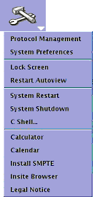

Operating Documentation
Direction 5670000, Rev# 1
Module Version 6.0, Version Date 4/24/09
Operating Documentation |
To shut down the host PC:
Launch the Service Desktop Manager.
Click the Tools button and then choose System Shutdown from the Tools drop-down menu.
Illustration 1: Service Tools Menu

Make sure the Host PC is shutdown. See system shutdown procedure in Section 4.1.
Press one of the [EMERGENCY STOP] buttons as shown in Illustration 2.
Verify the power to the Gradient subsystem and RF subsystem is shut off.
Gradient verification: Look at the XPS (Gradient Power Supply) Signal Board and confirm the Fault LED is on. (See Illustration 3).
RF Amplifier Verification: Look at the bank on the front of the RF Amp and confirm that the AC Power LED is off. (See Illustration 4).
On the PDU, press the EMO Reset Button to return power to all affected cabinets. See Illustration 5 for PGR PDU.
Repeat steps 2 through 4 for each of the other [EMERGENCY STOP] buttons.
The AC power for the Magnet Monitor is not controlled by the Emergency Off button.
Make sure the Host PC is shutdown. See System Shutdown procedure Section 4.1.
Press one of the [EMERGENCY OFF] buttons (the location of buttons is determined by the customer). Verify that power was removed from the PDU by checking the input voltage test points or viewing the PDU power indicator lights. See Illustration 5.
On the System Main Disconnect Panel, press the [SYSTEM ON] button. The rest of the system should automatically power on.
On the PDU, press the [EMO RESET] button.
Repeat steps 2-4 for the other [EMERGENCY OFF] buttons. (This includes pressing the [SYSTEM OFF] button on the MDP). Normal locations for Emergency Off buttons are in the magnet room and in the operator room.